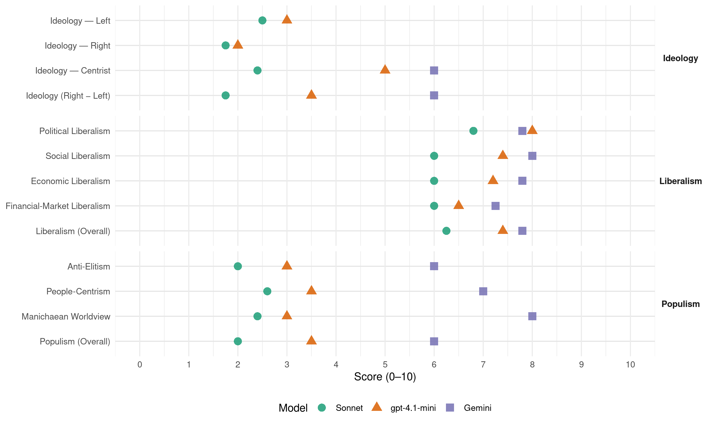

(Georgia, 2020)
manifesto_id 84450_202010
Get full text: This site shows derived annotations and short verbatim quotes only. The full manifesto text is © Manifesto Project / WZB — obtain it via manifesto-project.wzb.eu using the manifesto_id above.
Headline scores
| Dimension | Sonnet | gpt-4.1-mini | Gemini |
|---|---|---|---|
| Populism (Overall) | 2.0 | 3.5 | 6.0 |
| Anti-Elitism | 2.0 | 3.0 | 6.0 |
| People-Centrism | 2.6 | 3.5 | 7.0 |
| Manichaean Worldview | 2.4 | 3.0 | 8.0 |
| Ideology (Right − Left) | 1.8 | 3.5 | 6.0 |
| Liberalism (Overall) | 6.2 | 7.4 | 7.8 |
| Political Liberalism | 6.8 | 8.0 | 7.8 |
| Social Liberalism | 6.0 | 7.4 | 8.0 |
| Economic Liberalism | 6.0 | 7.2 | 7.8 |
| Financial-Market Liberalism | 6.0 | 6.5 | 7.2 |
Evidence per dimension
Economic Liberalism
Gemini · score 8.0 · verified · chunk 1
“თავისუფალი საბაზრო ეკონომიკის პრინციპების ერთგულებას”
კერძო სექტორის მუდმივ განვითარებასა და თავისუფალი საბაზრო ეკონომიკის პრინციპების ერთგულებას ეფუძნება.
Gemini · score 9.0 · verified · chunk 2
“თავისუფალი საბაზრო ეკონომიკის პრინციპების ერთგულებას ეფუძნება”
აღნიშნულ წარმატებულ და სანდო ეკონომიკურ პოლიტიკას განაპირობებს მმართველი ძალის ეკონომიკური ხედვა, რომელიც კერძო სექტორის მუდმივ განვითარებასა და თავისუფალი საბაზრო ეკონომიკის პრინციპების ერთგულებას ეფუძნება.
Gemini · score 8.0 · verified · chunk 3
“ხელს უწყობს კონკურენციის გაზრდას”
სიხშირეები და ტარიფების ოდენობა, რაც ხელს უწყობს კონკურენციის გაზრდას. შესაბამისად (პანდემიით განპირობებული
Gemini · score 6.0 · verified · chunk 4
“კერძო სექტორსა და სახელმწიფოს შორის”
მართვის ახალი მოდელი, რომელიც ეფუძნება კერძო სექტორსა და სახელმწიფოს შორის პასუხისმგებლობის გაზიარებას
Gemini · score 8.0 · verified · chunk 5
“თავისუფალი ვაჭრობის შეთანხმება ჩინეთსა და ჰონ-კონგთან”
გაფორმდა და ძალაში შევიდა თავისუფალი ვაჭრობის შეთანხმება ჩინეთსა და ჰონ-კონგთან.
gpt-4.1-mini · score 7.0 · verified · chunk 1
“ეკონომიკის ხარისხობრივი განვითარებისთვის ფუნდამენტური ინსტიტუტების მშენებლობა”
…„ქართულმა ოცნებამ“ დაიწყო ეკონომიკის ხარისხობრივი განვითარებისთვის ფუნდამენტური ინსტიტუტების მშენებლობა. მთელი რიგი მიმართულებებით განხორციელებულმა სისტემურმა რეფორმებმა საფუძველი დაუდო ეკონომიკის ჯანსაღ განვითარებას.
gpt-4.1-mini · score 8.0 · verified · chunk 2
“„ქართული ოცნება - დემოკრატიული საქართველო“ თავისუფალი საბაზრო ეკონომიკის პრინციპების ერთგული რჩება და მომავალში კვლავაც გაგრძელდება აღნიშნული პრინციპის განუხრელი დაცვა”
მმართველი ძალის გადაწყვეტილებით, ახალი რეგულაციების შემოღება და მათი იმპლემენტაცია სიღრმისეულ ანალიზს ეფუძნება. უკვე ამოქმედდა რეგულირების გავლენის შეფასების RIA ინსტრუმენტი, რაც რეგულაციების მოსალოდნელი შედეგების ფართო ანალიზის საშუალებას იძლევა. გაფართოვდება არსებული ინსტრუმენტი ბიზნესგარემოზე ზემოქმედების მქონე საკანონმდებლო ინიციატივების თაობაზე; გაგრძელდება თითოეული რეგულაციის შემოღების ფაქიზად დანერგვა, რათა ნებისმიერი ნეგატიური შედეგი თავიდან იყოს აცილებული; ხელისუფლების მხრიდან შენარჩუნებული იქნება გადასახადების დაბალი დონე; საგადასახადო ადმინისტრირებაში დაიწყება ავტომატური დეკლარირების სისტემის დანერგვა, რაც მნიშვნელოვნად შეამცირებს საგადასახადო ორგანოებთან ბიზნესსუბიექტების მუშაობის დროსა და საჭირო რესურსს.
gpt-4.1-mini · score 7.0 · verified · chunk 3
“კონკურენციის გაზრდას”
ონ განსაზღვრონ ფრენის სიხშირეები და ტარიფების ოდენობა, რაც ხელს უწყობს კონკურენციის გაზრდას. შესაბამისად (პანდემიით განპირობებული ფრენების შეზღუდვამდე), მუდმივად მზარდი იყო საქართველოში არსებული აეროპორტებიდან მგზავრთა გადაყვანის მაჩვენებლები.
gpt-4.1-mini · score 7.0 · verified · chunk 4
“ბაზრის ეკონომიკის განვითარება, კონკურენციის ხელშეწყობა და კერძო სექტორის მხარდაჭერა”
…ბაზრის ეკონომიკის განვითარება, კონკურენციის ხელშეწყობა და კერძო სექტორის მხარდაჭერა განათლებისა და მეცნიერების სფეროში…
gpt-4.1-mini · score 7.0 · verified · chunk 5
“ეკონომიკური კეთილდღეობის გაძლიერების ხელშეწყობა”
…აზიის, ახლო აღმოსავლეთის, აფრიკისა და სამხრეთ ამერიკის რეგიონების მზარდი როლისა და შესაძლებლობების გათვალისწინებით, აღნიშნულ რეგიონებში ქვეყნის პოლიტიკური ხილვადობის კიდევ უფრო გაზრდა და საქართველოს ეკონომიკური კეთილდღეობის გაძლიერების ხელშეწყობა; აქტიური ძალისხმევა უნდა იქნეს მიმართული რეგიონში…
Sonnet · score 7.0 · verified · chunk 1
“თავისუფალი საბაზრო ეკონომიკის პრინციპების ერთგულებას”
კერძო სექტორის მუდმივ განვითარებასა და თავისუფალი საბაზრო ეკონომიკის პრინციპების ერთგულებას ეფუძნება
Sonnet · score 6.0 · verified · chunk 3
“კონკურენციის გაზრდას”
The manifesto opens with aviation liberalization enabling airlines to set their own frequencies and tariffs, promoting competition; it also references privatization of agricultural land and market access programs.
Sonnet · score 5.0 · verified · chunk 4
“კერძო სექტორის ჩართულობის შედეგად”
The manifesto references private sector involvement in professional education and public-private partnerships, alongside significant state funding and intervention in education markets.
Sonnet · score 6.0 · verified · chunk 5
“ადგილობრივი ბიზნესის სტიმულირებას”
ასევე, საქართველოში ჩატარებულმა სხვადასხვა საერთაშორისო ფესტივალმა მნიშვნელოვნად გაზარდა ვიზიტორთა რაოდენობა და ხელი შეუწყო ადგილობრივი ბიზნესის სტიმულირებას
Financial-Market Liberalism
Gemini · score 8.0 · verified · chunk 1
“კაპიტალის ბაზრის რეფორმა”
ავტომატური დაბრუნების რეფორმა …… 322.5.3. კაპიტალის ბაზრის რეფორმა ……………………………………………………………………..
Gemini · score 8.0 · verified · chunk 2
“კაპიტალის ბაზრის განვითარების კუთხით, არაერთი მნიშვნელოვანი ნაბიჯი”
2.5.3. კაპიტალის ბაზრის რეფორმა კაპიტალის ბაზრის განვითარების კუთხით, არაერთი მნიშვნელოვანი ნაბიჯი გადაიდგა. 2016 წელს შემუშავდა კაპიტალის ბაზრის განვითარების სტრატეგია და მისი თანმდევი სამოქმედო გეგმა.
Gemini · score 7.0 · verified · chunk 3
“ფინანსურ ინსტრუმენტებზე ხელმისაწვდომობის გაზრდის მიზნით”
სახელმწიფოს მხრიდან მილიარდ ლარზე მეტი ფინანსური რესურსი დაიხარჯება; ფინანსურ ინსტრუმენტებზე ხელმისაწვდომობის გაზრდის მიზნით, ასევე, სოფლის მეურნეობის
Gemini · score 6.0 · verified · chunk 4
“კეთილსაიმედო ინვესტირების პრინციპების დაცვით”
დაგროვებითი საპენსიო სქემის ეფექტიანი მართვა და კეთილსაიმედო ინვესტირების პრინციპების დაცვით, მონაწილეებისა და
gpt-4.1-mini · score 6.0 · verified · chunk 1
“კაპიტალის ბაზრის რეფორმა …………………………………………………………………………… 33”
…2.5.3. კაპიტალის ბაზრის რეფორმა …………………………………………………………………………… 33 2.5.4. საპენსიო რეფორმა …………………………………………………………………………………. 33
gpt-4.1-mini · score 7.0 · verified · chunk 2
“კაპიტალის ბაზრის განვითარების კუთხით, არაერთი მნიშვნელოვანი ნაბიჯი გადაიდგა”
კაპიტალის ბაზრის განვითარების კუთხით, არაერთი მნიშვნელოვანი ნაბიჯი გადაიდგა. 2016 წელს შემუშავდა კაპიტალის ბაზრის განვითარების სტრატეგია და მისი თანმდევი სამოქმედო გეგმა. სრულიად განახლდა ფასიანი ქაღალდების ანგარიშსწორების სისტემა, საკანონმდებლო კუთხით დაიხვეწა ფასიანი ქაღალდების შესახებ კანონმდებლობა.
Sonnet · score 7.0 · verified · chunk 1
“კაპიტალის ბაზრის რეფორმა”
2.5.3. კაპიტალის ბაზრის რეფორმა — listed among economic reforms alongside pension reform and insolvency reform
Sonnet · score 7.0 · verified · chunk 2
“ინვესტორთა დაცვის, გამჭვირვალობისა და ანგარიშვალდებულების”
გადაიხედა და დასავლურ სტანდარტებს დაუახლოვდა ინვესტორთა დაცვის, გამჭვირვალობისა და ანგარიშვალდებულების სტანდარტები.
Sonnet · score 5.0 · verified · chunk 3
“დაგროვებითი საპენსიო სქემის ეფექტიანი მართვა და კეთილსაიმედო ინვესტირების პრინციპების”
The manifesto discusses the accumulative pension scheme with prudent investment principles and an independent pension agency managing pension assets, reflecting moderate pro-liberal financial market orientation.
Sonnet · score 5.0 · verified · chunk 4
“კეთილსაიმედო ინვესტირების პრინციპების დაცვით”
The manifesto mentions the accumulated pension system and the principle of reliable investment in managing pension assets for participants and their heirs.
Political Liberalism
Gemini · score 9.0 · verified · chunk 1
“ხელისუფლებათა დანაწილების პრინციპის საფუძველზე საპარლამენტო”
უზრუნველყოფილია: ხელისუფლებათა დანაწილების პრინციპის საფუძველზე საპარლამენტო რესპუბლიკის კონსტიტუციური სისტემის ჩამოყალიბება
Gemini · score 8.0 · verified · chunk 2
“არასრულწლოვანთა მართლმსაჯულების სფეროში განხორციელებული და მიმდინარე რეფორმის”
საერთაშორისო თანამშრომლობის მნიშვნელოვანი განვითარება; არასრულწლოვანთა მართლმსაჯულების სფეროში განხორციელებული და მიმდინარე რეფორმის კვალდაკვალ, უზრუნველყოფილი იქნება პოლიციის დანაყოფებში ბავშვზე ორიენტირებული გარემოს შექმნა;
Gemini · score 7.0 · verified · chunk 3
“ევროპული სტანდარტების დანერგვა ეროვნულ კანონმდებლობაში”
მგზავრთა და მომხმარებელთა უფლებების დაცვის კუთხით საავიაციო სფეროში არსებული ევროპული სტანდარტების დანერგვა ეროვნულ კანონმდებლობაში. სატრანსპორტო და ლოგისტიკური
Gemini · score 7.0 · verified · chunk 4
“საქართველოს პარლამენტმა მიიღო კანონი”
2016 წელს საქართველოს პარლამენტმა მიიღო კანონი „ადრეული და სკოლამდელი აღზრდისა
Gemini · score 8.0 · verified · chunk 5
“დემოკრატიული და სამართლებრივი სახელმწიფოს ფუძემდებლურ პრინციპებს”
ანტიდასავლურ პოლიტიკურ კურსს შორის, რომელიც უგულებელყოფდა დემოკრატიული და სამართლებრივი სახელმწიფოს ფუძემდებლურ პრინციპებს, ლახავდა ადამიანის ღირსებასა
gpt-4.1-mini · score 8.0 · verified · chunk 1
“საქართველოს პარლამენტმა მიიღო საპარლამენტო დემოკრატიის საუკეთესო ევროპულ ტრადიციებზე დაფუძნებული ძირითადი კანონი”
…საკონსტიტუციო კომისიის წარმატებული საქმიანობის შედეგად, 2018 წლის 23 მარტს, საქართველოს პარლამენტმა მიიღო საპარლამენტო დემოკრატიის საუკეთესო ევროპულ ტრადიციებზე დაფუძნებული ძირითადი კანონი, რითაც პროავტორიტარული, წინააღმდეგობრივი და დეფორმირებული კონსტიტუცია შეიცვალა დემოკრატიული, კონსტიტუციური სამართლის ფუნდამენტურ პრინციპებზე დაფუძნებული, საპარლამენტო მმართველობის სისტემის უზრუნველმყოფი კონსტიტუციით.
gpt-4.1-mini · score 8.0 · verified · chunk 2
“ბიუჯეტის გამჭვირვალობის 2019 კვლევის (Open Budget Survey – 2019) შედეგების მიხედვით, საქართველო „სრულიად გამჭვირვალე ქვეყნების“ რიგში კვლავ მოწინავე, მე-5 ადგილს იკავებს”
საქართველო ბოლო წლებში წარმატებით ახორციელებს საჯარო ფინანსების მართვის რეფორმას. ბიუჯეტის გამჭვირვალობის 2019 კვლევის (Open Budget Survey – 2019) შედეგების მიხედვით, საქართველო „სრულიად გამჭვირვალე ქვეყნების“ რიგში კვლავ მოწინავე, მე-5 ადგილს იკავებს მსოფლიოს 117 ქვეყანას შორის.
gpt-4.1-mini · score 8.0 · verified · chunk 3
“საყოველთაო ჯანდაცვის პროგრამის ამოქმედებით”
2013 წელს საყოველთაო ჯანდაცვის პროგრამის ამოქმედებით, „ქართულმა ოცნებამ“ საფუძველი ჩაუყარა ხარისხიან ჯანდაცვის სერვისებზე უნივერსალურ ხელმისაწვდომობას. 2017 წლიდან პროგრამა კიდევ უფრო საჭიროებებზე ორიენტირებული გახდა და სოციალური სამართლიანობის პრინციპის გატარების მიზნით, განისაზღვრა შემოსავლების მიხედვით ბენეფიციარების დიფერენციაციის ახალი კრიტერიუმები.
gpt-4.1-mini · score 8.0 · verified · chunk 4
“დემოკრატიის, ადამიანის უფლებების, არჩევნების, სასამართლოების, მედიის თავისუფლების უზრუნველყოფა”
…დემოკრატიის, ადამიანის უფლებების, არჩევნების, სასამართლოების, მედიის თავისუფლების უზრუნველყოფა და ინსტიტუციური გამჭვირვალობა…
gpt-4.1-mini · score 8.0 · verified · chunk 5
“დემოკრატიული და სამართლებრივი სახელმწიფოს ფუძემდებლურ პრინციპებს”
…ანტიდასავლურ პოლიტიკურ კურსს შორის, რომელიც უგულებელყოფდა დემოკრატიული და სამართლებრივი სახელმწიფოს ფუძემდებლურ პრინციპებს, ლახავდა ადამიანის ღირსებასა და სხვა ძირითად უფლებებსა და თავისუფლებებს. ეს ღირებულებითი შეუთავსებლობა აისახებოდა…
Sonnet · score 8.0 · verified · chunk 1
“დემოკრატიის პრინციპებს, კანონის უზენაესობასა”
ეფუძნება დემოკრატიის პრინციპებს, კანონის უზენაესობასა და ძირითადი უფლებების დაცვას
Sonnet · score 7.0 · verified · chunk 2
“ქვეყნის ეროვნული ბანკის დამოუკიდებლობის პრინციპი”
დაცული იქნება ქვეყნის ეროვნული ბანკის დამოუკიდებლობის პრინციპი; საშუალოვადიან პერიოდში, 2019 წლის დონესთან შედარებით
Sonnet · score 6.0 · verified · chunk 3
“გამჭვირვალე პროცედურებზე დაფუძნებული, ევროპული სტანდარტების შესაბამისი”
The manifesto references transparent procedures and European standards for environmental impact assessment, with public participation in decision-making, indicating moderate pro-liberal political governance norms.
Sonnet · score 6.0 · verified · chunk 4
“კანონმდებლობით დადგენილი წესის შესაბამისად”
The manifesto repeatedly references compliance with legislation and legal frameworks, indicating respect for rule of law, though it does not extensively discuss democratic checks and balances or media freedom.
Sonnet · score 7.0 · verified · chunk 5
“დემოკრატიული და სამართლებრივი სახელმწიფოს ფუძემდებლურ პრინციპებს”
უგულებელყოფდა დემოკრატიული და სამართლებრივი სახელმწიფოს ფუძემდებლურ პრინციპებს, ლახავდა ადამიანის ღირსებასა და სხვა ძირითად უფლებებსა და თავისუფლებებს
Liberalism (Overall)
Gemini · score 8.0 · verified · chunk 1
“ხელისუფლებათა დანაწილების პრინციპის საფუძველზე საპარლამენტო”
უზრუნველყოფილია: ხელისუფლებათა დანაწილების პრინციპის საფუძველზე საპარლამენტო რესპუბლიკის კონსტიტუციური სისტემის ჩამოყალიბება
Gemini · score 8.0 · verified · chunk 2
“თავისუფალი საბაზრო ეკონომიკის პრინციპების ერთგულებას ეფუძნება”
აღნიშნულ წარმატებულ და სანდო ეკონომიკურ პოლიტიკას განაპირობებს მმართველი ძალის ეკონომიკური ხედვა, რომელიც კერძო სექტორის მუდმივ განვითარებასა და თავისუფალი საბაზრო ეკონომიკის პრინციპების ერთგულებას ეფუძნება.
Gemini · score 8.0 · verified · chunk 3
“ხელს უწყობს კონკურენციის გაზრდას”
სიხშირეები და ტარიფების ოდენობა, რაც ხელს უწყობს კონკურენციის გაზრდას. შესაბამისად (პანდემიით განპირობებული
Gemini · score 7.0 · verified · chunk 4
“კერძო სექტორსა და სახელმწიფოს შორის”
მართვის ახალი მოდელი, რომელიც ეფუძნება კერძო სექტორსა და სახელმწიფოს შორის პასუხისმგებლობის გაზიარებას
Gemini · score 8.0 · verified · chunk 5
“დემოკრატიული და სამართლებრივი სახელმწიფოს ფუძემდებლურ პრინციპებს”
ანტიდასავლურ პოლიტიკურ კურსს შორის, რომელიც უგულებელყოფდა დემოკრატიული და სამართლებრივი სახელმწიფოს ფუძემდებლურ პრინციპებს, ლახავდა ადამიანის ღირსებასა
gpt-4.1-mini · score 7.0 · verified · chunk 1
“საქართველოს პარლამენტმა მიიღო საპარლამენტო დემოკრატიის საუკეთესო ევროპულ ტრადიციებზე დაფუძნებული ძირითადი კანონი”
…საკონსტიტუციო კომისიის წარმატებული საქმიანობის შედეგად, 2018 წლის 23 მარტს, საქართველოს პარლამენტმა მიიღო საპარლამენტო დემოკრატიის საუკეთესო ევროპულ ტრადიციებზე დაფუძნებული ძირითადი კანონი, რითაც პროავტორიტარული, წინააღმდეგობრივი და დეფორმირებული კონსტიტუცია შეიცვალა დემოკრატიული, კონსტიტუციური სამართლის ფუნდამენტურ პრინციპებზე დაფუძნებული, საპარლამენტო მმართველობის სისტემის უზრუნველმყოფი კონსტიტუციით.
gpt-4.1-mini · score 8.0 · verified · chunk 2
“ბიუჯეტის გამჭვირვალობის 2019 კვლევის (Open Budget Survey – 2019) შედეგების მიხედვით, საქართველო „სრულიად გამჭვირვალე ქვეყნების“ რიგში კვლავ მოწინავე, მე-5 ადგილს იკავებს”
საქართველო ბოლო წლებში წარმატებით ახორციელებს საჯარო ფინანსების მართვის რეფორმას. ბიუჯეტის გამჭვირვალობის 2019 კვლევის (Open Budget Survey – 2019) შედეგების მიხედვით, საქართველო „სრულიად გამჭვირვალე ქვეყნების“ რიგში კვლავ მოწინავე, მე-5 ადგილს იკავებს მსოფლიოს 117 ქვეყანას შორის.
gpt-4.1-mini · score 7.0 · verified · chunk 3
“საყოველთაო ჯანდაცვის პროგრამის ამოქმედებით”
2013 წელს საყოველთაო ჯანდაცვის პროგრამის ამოქმედებით, „ქართულმა ოცნებამ“ საფუძველი ჩაუყარა ხარისხიან ჯანდაცვის სერვისებზე უნივერსალურ ხელმისაწვდომობას. 2017 წლიდან პროგრამა კიდევ უფრო საჭიროებებზე ორიენტირებული გახდა და სოციალური სამართლიანობის პრინციპის გატარების მიზნით, განისაზღვრა შემოსავლების მიხედვით ბენეფიციარების დიფერენციაციის ახალი კრიტერიუმები.
gpt-4.1-mini · score 8.0 · verified · chunk 4
“დემოკრატიის, ადამიანის უფლებების, ბაზრის ეკონომიკის განვითარება და კონკურენციის ხელშეწყობა”
…დემოკრატიის, ადამიანის უფლებების, ბაზრის ეკონომიკის განვითარება და კონკურენციის ხელშეწყობა განათლებისა და მეცნიერების სფეროში…
gpt-4.1-mini · score 7.0 · verified · chunk 5
“დემოკრატიული და სამართლებრივი სახელმწიფოს ფუძემდებლურ პრინციპებს”
…ანტიდასავლურ პოლიტიკურ კურსს შორის, რომელიც უგულებელყოფდა დემოკრატიული და სამართლებრივი სახელმწიფოს ფუძემდებლურ პრინციპებს, ლახავდა ადამიანის ღირსებასა და სხვა ძირითად უფლებებსა და თავისუფლებებს. ეს ღირებულებითი შეუთავსებლობა აისახებოდა…
Sonnet · score 7.0 · verified · chunk 1
“ინსტიტუციური დემოკრატიის აღმშენებლობა”
ადამიანის უფლებათა დაცვის ეროვნული სტრატეგია, რომლის განხორციელებაც ინსტიტუციური დემოკრატიის აღმშენებლობის საფუძვლად იქცა
Sonnet · score 6.0 · verified · chunk 3
“ევროპული სტანდარტების შესაბამისი”
Across all dimensions the manifesto consistently references alignment with European standards in governance, market regulation, and social policy, reflecting a moderate pro-liberal orientation.
Sonnet · score 6.0 · verified · chunk 4
“სამართლიანი, გამჭვირვალე და ეფექტიანი”
The manifesto’s overall liberal orientation is moderate: it supports rule of law, inclusive social policies, and some market mechanisms, but relies heavily on state provision and funding across all sectors.
Sonnet · score 6.0 · verified · chunk 5
“დემოკრატიული და სამართლებრივი სახელმწიფოს ფუძემდებლურ პრინციპებს”
უგულებელყოფდა დემოკრატიული და სამართლებრივი სახელმწიფოს ფუძემდებლურ პრინციპებს, ლახავდა ადამიანის ღირსებასა და სხვა ძირითად უფლებებსა და თავისუფლებებს
Anti-Elitism
Gemini · score 8.0 · verified · chunk 1
“მხოლოდ მმართველი „ელიტის“ შეუზღუდავ ბატონობას”
ასეთი „სახელმწიფო“ უზრუნველყოფდა მხოლოდ მმართველი „ელიტის“ შეუზღუდავ ბატონობას, მის მატერიალურ თუ პოლიტიკურ სარგებელს
Gemini · score 8.0 · verified · chunk 2
“ბიზნესის ტერორი, საკუთრების უფლების უხეში დარღვევა, ელიტური კორუფცია”
წინა ხელისუფლების ეკონომიკური განვითარების ფასადური სურათის უკან, სისტემური დანაშაულების უზარმაზარი ნუსხა არსებობდა. ბიზნესის ტერორი, საკუთრების უფლების უხეში დარღვევა, ელიტური კორუფცია და სხვა უმძიმესი ფაქტორები, წინა ხელისუფლების მთავარ პოლიტიკურ ინსტრუმენტებს წარმოადგენდა.
Gemini · score 2.0 · verified · chunk 5
“არა ქვეყნის, არამედ მმართველი „ელიტის“”
ნაბიჯებში, რომელთა მიზანს არა ქვეყნის, არამედ მმართველი „ელიტის“ უსაფრთხოებისა და კეთილდღეობის უზრუნველყოფა
gpt-4.1-mini · score 3.0 · verified · chunk 1
“„ნაციონალური მოძრაობის“ ზედა ფენა, რომელმაც სახელმწიფო, რეალურად, საკუთარ კორპორაციად აქცია.”
…დამორჩილების სისტემური პრაქტიკა. 2004-2012 წლებში, „ნაციონალური მოძრაობის“ ახალ „ნომენკლატურად“ გადაიქცა საჯარო სამსახური. ქვეყანასა და მის ყველა რესურსს, ფაქტობრივად, სრულად განაგებდა „ნაციონალური მოძრაობის“ ზედა ფენა, რომელმაც სახელმწიფო, რეალურად, საკუთარ კორპორაციად აქცია. ასეთი „სახელმწიფო“ უზრუნველყოფდა მხოლოდ მმართველი „ელიტის“ შეუზღუდავ ბატონობას, მის მატერიალურ თუ პოლიტიკურ სარგებელს და სასიცოცხლო სივრცეს ქვეყნის რიგითი მოქალაქეებისთვის აღარ ტოვებდა.
gpt-4.1-mini · score 3.0 · verified · chunk 2
“ბიზნესის ტერორი, საკუთრების უფლების უხეში დარღვევა, ელიტური კორუფცია”
წინა ხელისუფლების ეკონომიკური发展的 ფასადური სურათის უკან, სისტემური დანაშაულების უზარმაზარი ნუსხა არსებობდა. ბიზნესის ტერორი, საკუთრების უფლების უხეში დარღვევა, ელიტური კორუფცია და სხვა უმძიმესი ფაქტორები, წინა ხელისუფლების მთავარ პოლიტიკურ ინსტრუმენტებს წარმოადგენდა.
Sonnet · score 4.0 · verified · chunk 2
“ელიტური კორუფცია და სხვა უმძიმესი”
ბიზნესის ტერორი, საკუთრების უფლების უხეში დარღვევა, ელიტური კორუფცია და სხვა უმძიმესი ფაქტორები, წინა ხელისუფლების მთავარ პოლიტიკურ ინსტრუმენტებს წარმოადგენდა.
Sonnet · score 1.0 · verified · chunk 3
“2012 წლამდე, სრულად მოშლილი იყო გარემოსდაცვითი კონტროლი”
The text references failures before 2012 as a contrast to current governance, implying prior mismanagement, but does not frame elites as corrupt enemies of the people.
Sonnet · score 1.0 · verified · chunk 4
“ქართული ოცნების ხელისუფლებამ წარმატებით დაძლია”
The ruling party Georgian Dream frames itself as successfully overcoming COVID-19 challenges in education, with no anti-elite rhetoric directed at corrupt elites.
Ideology — Centrist
Gemini · score 7.0 · verified · chunk 1
“მხოლოდ მმართველი „ელიტის“ შეუზღუდავ ბატონობას”
ასეთი „სახელმწიფო“ უზრუნველყოფდა მხოლოდ მმართველი „ელიტის“ შეუზღუდავ ბატონობას, მის მატერიალურ თუ პოლიტიკურ სარგებელს
Gemini · score 8.0 · verified · chunk 2
“ქართულმა საზოგადოებამ მტკიცე უარი უთხრა იმ პოლიტიკურ ძალას”
შესაბამისად, 2012 წელს, ქართულმა საზოგადოებამ მტკიცე უარი უთხრა იმ პოლიტიკურ ძალას, რომელიც კრიმინალურ ტერორს სახელმწიფოს სახელით ახორციელებდა.
Gemini · score 3.0 · verified · chunk 5
“არა ხელისუფლებისა და მმართველი „ელიტის“”
საგარეო პოლიტიკა გახდა პრაგმატული, წინდახედული და მთლიანად ორიენტირებული არა ხელისუფლებისა და მმართველი „ელიტის“, არამედ ქვეყნის ეროვნულ ინტერესებზე
gpt-4.1-mini · score 6.0 · verified · chunk 1
“ქართველი ხალხის ერთიანობა, მისი სიბრძნე, სიმტკიცე და შემართება”
…პანდემიით მიყენებული ეკონომიკური ზარალი, ხოლო პოსტკრიზისულ პერიოდში მიღწეულ იქნას დაჩქარებული სოციალურ-ეკონომიკური განვითარება და ქვეყნის მოქალაქეების მეტი კეთილდღეობა. ქართველი ხალხის ერთიანობა, მისი სიბრძნე, სიმტკიცე და შემართება, რამაც 2012 წლის 1 ოქტომბერს მოიტანა დიდი გამარჯვება, ამ არჩევნებშიც, კვლავაც, ქვეყნის გამარჯვების საფუძველი იქნება!
gpt-4.1-mini · score 4.0 · verified · chunk 2
“მმართველი ძალის ეკონომიკური ხედვა, რომელიც კერძო სექტორის მუდმივ განვითარებასა და თავისუფალი საბაზრო ეკონომიკის პრინციპების ერთგულებას ეფუძნება”
აღნიშნულ წარმატებულ და სანდო ეკონომიკურ პოლიტიკას განაპირობებს მმართველი ძალის ეკონომიკური ხედვა, რომელიც კერძო სექტორის მუდმივ განვითარებასა და თავისუფალი საბაზრო ეკონომიკის პრინციპების ერთგულებას ეფუძნება. მცირე მთავრობის კონცეფცია, კერძო სექტორზე გადატანილი აქცენტები და ეკონომიკური პოტენც…
Sonnet · score 3.0 · verified · chunk 1
“თითოეული მოქალაქის ხმა”
სადაც გაგონილი და ღირებულია თითოეული მოქალაქის ხმა
Sonnet · score 3.0 · verified · chunk 2
“ჩვენი გუნდის ხელისუფლებაში მოსვლის”
ჩვენი გუნდის ხელისუფლებაში მოსვლის შემდეგ, პირველ ნაბიჯები სწორედ აღნიშნული პრობლემების მოგვარებისკენ გადაიდგა.
Sonnet · score 1.0 · verified · chunk 3
“ჩვენი გუნდის გადაწყვეტილებით”
Generic references to ‘our team’ decisions appear occasionally but without strong people-vs-elite centrist populist framing.
Sonnet · score 3.0 · verified · chunk 4
“საჯარო-კერძო პარტნიორობის საფუძველზე”
The manifesto repeatedly invokes public-private partnership as a governance model, reflecting a centrist technocratic approach rather than strong ideological positioning.
Sonnet · score 2.0 · verified · chunk 5
“პრაგმატული, მტკიცე, ქვეყნის ეროვნული ინტერესების”
„ქართული ოცნება” ურყევად გააგრძელებს პრაგმატულ, მტკიცე, ქვეყნის ეროვნული ინტერესების შესაბამის შედეგებზე ორიენტირებულ საგარეო პოლიტიკურ კურსს
Ideology — Left
gpt-4.1-mini · score 3.0 · verified · chunk 1
“ბიზნესის ტერორი, საკუთრების უფლების უხეში დარღვევა, ელიტური კორუფცია”
…წინა ხელისუფლების ეკონომიკური发展的 ფასადური სურათის უკან, სისტემური დანაშაულების უზარმაზარი ნუსხა არსებობდა. ბიზნესის ტერორი, საკუთრების უფლების უხეში დარღვევა, ელიტური კორუფცია და სხვა უმძიმესი ფაქტორები, წინა ხელისუფლების მთავარ პოლიტიკურ ინსტრუმენტებს წარმოადგენდა.
gpt-4.1-mini · score 3.0 · verified · chunk 2
“ბიზნესის ტერორი, საკუთრების უფლების უხეში დარღვევა, ელიტური კორუფცია”
წინა ხელისუფლების ეკონომიკური发展的 ფასადური სურათის უკან, სისტემური დანაშაულების უზარმაზარი ნუსხა არსებობდა. ბიზნესის ტერორი, საკუთრების უფლების უხეში დარღვევა, ელიტური კორუფცია და სხვა უმძიმესი ფაქტორები, წინა ხელისუფლების მთავარ პოლიტიკურ ინსტრუმენტებს წარმოადგენდა.
Sonnet · score 2.0 · verified · chunk 1
“სიღარიბის საბოლოოდ დაძლევა”
საქართველოში სიღარიბის საბოლოოდ დაძლევა ჩვენი სახელმწიფოსა და ხელისუფლებისთვის უმთავრეს მიზნებად რჩება
Sonnet · score 3.0 · verified · chunk 3
“სოციალური სამართლიანობის პრინციპზე დაფუძნებული ჯანმრთელობის დაცვის სისტემა”
The manifesto emphasizes universal healthcare, social protection expansion, and poverty reduction, reflecting moderate left-leaning social policy rather than anti-corporate populism.
Sonnet · score 4.0 · verified · chunk 4
“სოციალური დაცვის სისტემის ფუნქციონირების”
The manifesto emphasizes a fair and transparent social protection system, poverty reduction, and extensive state-funded social programs, reflecting moderate left-leaning social policy.
Sonnet · score 1.0 · verified · chunk 5
“სოციალური საწარმოების დაფინანსება”
გაიზარდა სოციალური საწარმოების დაფინანსება, დაფინანსდა 40-ზე მეტი სოციალური საწარმო
Ideology (Right − Left)
Gemini · score 7.0 · verified · chunk 1
“მხოლოდ მმართველი „ელიტის“ შეუზღუდავ ბატონობას”
ასეთი „სახელმწიფო“ უზრუნველყოფდა მხოლოდ მმართველი „ელიტის“ შეუზღუდავ ბატონობას, მის მატერიალურ თუ პოლიტიკურ სარგებელს
Gemini · score 8.0 · verified · chunk 2
“ქართულმა საზოგადოებამ მტკიცე უარი უთხრა იმ პოლიტიკურ ძალას”
შესაბამისად, 2012 წელს, ქართულმა საზოგადოებამ მტკიცე უარი უთხრა იმ პოლიტიკურ ძალას, რომელიც კრიმინალურ ტერორს სახელმწიფოს სახელით ახორციელებდა.
Gemini · score 3.0 · verified · chunk 5
“არა ხელისუფლებისა და მმართველი „ელიტის“”
საგარეო პოლიტიკა გახდა პრაგმატული, წინდახედული და მთლიანად ორიენტირებული არა ხელისუფლებისა და მმართველი „ელიტის“, არამედ ქვეყნის ეროვნულ ინტერესებზე
gpt-4.1-mini · score 4.0 · verified · chunk 1
“„ნაციონალური მოძრაობის“ ზედა ფენა, რომელმაც სახელმწიფო, რეალურად, საკუთარ კორპორაციად აქცია.”
…დამორჩილების სისტემური პრაქტიკა. 2004-2012 წლებში, „ნაციონალური მოძრაობის“ ახალ „ნომენკლატურად“ გადაიქცა საჯარო სამსახური. ქვეყანასა და მის ყველა რესურსს, ფაქტობრივად, სრულად განაგებდა „ნაციონალური მოძრაობის“ ზედა ფენა, რომელმაც სახელმწიფო, რეალურად, საკუთარ კორპორაციად აქცია. ასეთი „სახელმწიფო“ უზრუნველყოფდა მხოლოდ მმართველი „ელიტის“ შეუზღუდავ ბატონობას, მის მატერიალურ თუ პოლიტიკურ სარგებელს და სასიცოცხლო სივრცეს ქვეყნის რიგითი მოქალაქეებისთვის აღარ ტოვებდა.
gpt-4.1-mini · score 3.0 · verified · chunk 2
“მმართველი ძალის ეკონომიკური ხედვა, რომელიც კერძო სექტორის მუდმივ განვითარებასა და თავისუფალი საბაზრო ეკონომიკის პრინციპების ერთგულებას ეფუძნება”
აღნიშნულ წარმატებულ და სანდო ეკონომიკურ პოლიტიკას განაპირობებს მმართველი ძალის ეკონომიკური ხედვა, რომელიც კერძო სექტორის მუდმივ განვითარებასა და თავისუფალი საბაზრო ეკონომიკის პრინციპების ერთგულებას ეფუძნება. მცირე მთავრობის კონცეფცია, კერძო სექტორზე გადატანილი აქცენტები და ეკონომიკური პოტენც…
Sonnet · score 2.0 · verified · chunk 1
“კერძო სექტორის მუდმივ განვითარებასა და თავისუფალი საბაზრო ეკონომიკის”
მმართველი ძალის ეკონომიკური ხედვა, რომელიც კერძო სექტორის მუდმივ განვითარებასა და თავისუფალი საბაზრო ეკონომიკის პრინციპების ერთგულებას ეფუძნება
Sonnet · score 2.0 · verified · chunk 2
“ელიტური კორუფცია და სხვა უმძიმესი”
ბიზნესის ტერორი, საკუთრების უფლების უხეში დარღვევა, ელიტური კორუფცია და სხვა უმძიმესი ფაქტორები, წინა ხელისუფლების მთავარ პოლიტიკურ ინსტრუმენტებს წარმოადგენდა.
Sonnet · score 1.0 · verified · chunk 3
“სოციალური სამართლიანობის პრინციპზე დაფუძნებული”
The manifesto is primarily technocratic with mild social-democratic leanings; populist ideological content is negligible.
Sonnet · score 2.0 · verified · chunk 4
“სამართლიანი, გამჭვირვალე და ეფექტიანი”
The overall ideological flavor is mildly center-left with emphasis on fair, transparent, and effective governance rather than strong populist ideology.
Ideology — Right
gpt-4.1-mini · score 2.0 · verified · chunk 2
“ქართული საზოგადოებამ მტკიცე უარი უთხრა იმ პოლიტიკურ ძალას”
ამ და სხვა სისტემურ დანაშაულებზე არაერთი საერთაშორისო ორგანიზაცია და ჩვენი ქვეყნის მოკავშირე პარტნიორები აქტიურად საუბრობდნენ. შესაბამისად, 2012 წელს, ქართულმა საზოგადოებამ მტკიცე უარი უთხრა იმ პოლიტიკურ ძალას, რომელიც კრიმინალურ ტერორს სახელმწიფოს სახელით ახორციელებდა.
Sonnet · score 2.0 · verified · chunk 1
“ტერიტორიული მთლიანობის აღდგენა”
მშვიდობიანი ძალისხმევით ტერიტორიული მთლიანობის აღდგენა, აფხაზ და ოს ძმებთან და დებთან შერიგება
Sonnet · score 1.0 · verified · chunk 3
“ენერგოდამოუკიდებლობისა და ენერგოუსაფრთხოების ზრდას”
There is mild national-interest framing around energy independence and diversification away from Russia, but no nativist or anti-immigration rhetoric.
Sonnet · score 2.0 · verified · chunk 4
“ეროვნული და ზოგადსაკაცობრიო ღირებულებების”
Brief references to national and universal values appear in the education section, but there is no significant nationalist-protectionist or anti-immigration framing.
Sonnet · score 2.0 · verified · chunk 5
“ტერიტორიული მთლიანობის მშვიდობიანი გზით აღდგენა”
საქართველოსათვის უმნიშვნელოვანეს საგარეო პოლიტიკურ პრიორიტეტად რჩება ქვეყნის სუვერენიტეტის განმტკიცება და ტერიტორიული მთლიანობის მშვიდობიანი გზით აღდგენა
Manichaean Worldview
Gemini · score 8.0 · verified · chunk 1
“„ნაციონალური მოძრაობის“ აგრესიული რევანშიზმით განპირობებული”
დაძლეულ იქნას პარტიულ- პოლიტიკურ სისტემაში „ნაციონალური მოძრაობის“ აგრესიული რევანშიზმით განპირობებული სირთულეები
Gemini · score 8.0 · verified · chunk 2
“კრიმინალურ ტერორს სახელმწიფოს სახელით ახორციელებდა”
შესაბამისად, 2012 წელს, ქართულმა საზოგადოებამ მტკიცე უარი უთხრა იმ პოლიტიკურ ძალას, რომელიც კრიმინალურ ტერორს სახელმწიფოს სახელით ახორციელებდა.
gpt-4.1-mini · score 3.0 · verified · chunk 1
“„ნაციონალური მოძრაობის“ მმართველობის სავალალო შედეგი დემოკრატიული და სამართლებრივი სახელმწიფოს საძირკვლის - კონსტიტუციურობის, კანონიერებისა და სამართლიანობის მორყევა იყო.”
…დღეს საქართველო არის თავისუფალი ქვეყანა, რომელიც მიისწრაფვის ევროპული ტიპის, უმაღლესი დემოკრატიული სტანდარტის დამკვიდრებისკენ. „ნაციონალური მოძრაობის“ მმართველობის სავალალო შედეგი დემოკრატიული და სამართლებრივი სახელმწიფოს საძირკვლის - კონსტიტუციურობის, კანონიერებისა და სამართლიანობის მორყევა იყო. 2004-2012 წლებში, „ნაციონალური მოძრაობის“ ვიწროპარტიული ინტერესების საფუძველზე, დადგენილი პროცედურების უგულებელყოფით, მიიღეს 25 კონსტიტუციური კანონი…
gpt-4.1-mini · score 3.0 · verified · chunk 2
“კრიმინალურ ტერორს სახელმწიფოს სახელით ახორციელებდა”
შესაბამისად, 2012 წელს, ქართულმა საზოგადოებამ მტკიცე უარი უთხრა იმ პოლიტიკურ ძალას, რომელიც კრიმინალურ ტერორს სახელმწიფოს სახელით ახორციელებდა. ჩვენი გუნდის ხელისუფლებაში მოსვლის შემდეგ, პირველ ნაბიჯები სწორედ აღნიშნული პრობლემების მოგვარებისკენ გადაიდგა.
Sonnet · score 3.0 · verified · chunk 1
“კრიმინალურ ტერორს სახელმწიფოს სახელით”
მტკიცე უარი უთხრა იმ პოლიტიკურ ძალას, რომელიც კრიმინალურ ტერორს სახელმწიფოს სახელით ახორციელებდა
Sonnet · score 4.0 · verified · chunk 2
“კრიმინალურ ტერორს სახელმწიფოს სახელით”
ქართულმა საზოგადოებამ მტკიცე უარი უთხრა იმ პოლიტიკურ ძალას, რომელიც კრიმინალურ ტერორს სახელმწიფოს სახელით ახორციელებდა.
Sonnet · score 1.0 · verified · chunk 3
“2013 წლამდე იძულებით გადაადგილებულ პირებს ძალის გამოყენებით ასახლებდნენ”
The text contrasts pre-2012 forced evictions with current humane policy, but does not frame this as a moral good-vs-evil struggle or conspiracy.
Sonnet · score 1.0 · verified · chunk 4
“ქართული ოცნების უმნიშვნელოვანესი პრიორიტეტების”
The party presents its priorities positively but without framing opponents as evil or corrupt; no good-vs-evil moral struggle is evident in the text.
Sonnet · score 3.0 · verified · chunk 5
“ანტიეროვნულ, ანტისახელმწიფოებრივ და ასევე, ანტიდასავლურ შინაარსზე”
იმდროინდელი როგორც საშინაო, ისე საგარეო პოლიტიკური კურსის ანტიეროვნულ, ანტისახელმწიფოებრივ და ასევე, ანტიდასავლურ შინაარსზე ყველაზე ნათლად მეტყველებს
People-Centrism
Gemini · score 7.0 · verified · chunk 1
“ქართველი ხალხის ერთიანობა, მისი სიბრძნე”
ქართველი ხალხის ერთიანობა, მისი სიბრძნე, სიმტკიცე და შემართება, რამაც 2012 წლის
Gemini · score 7.0 · verified · chunk 2
“ქართულმა საზოგადოებამ მტკიცე უარი უთხრა იმ პოლიტიკურ ძალას”
შესაბამისად, 2012 წელს, ქართულმა საზოგადოებამ მტკიცე უარი უთხრა იმ პოლიტიკურ ძალას, რომელიც კრიმინალურ ტერორს სახელმწიფოს სახელით ახორციელებდა.
gpt-4.1-mini · score 5.0 · verified · chunk 1
“ქართველი ხალხის ერთიანობა, მისი სიბრძნე, სიმტკიცე და შემართება”
…პანდემიით მიყენებული ეკონომიკური ზარალი, ხოლო პოსტკრიზისულ პერიოდში მიღწეულ იქნას დაჩქარებული სოციალურ-ეკონომიკური განვითარება და ქვეყნის მოქალაქეების მეტი კეთილდღეობა. ქართველი ხალხის ერთიანობა, მისი სიბრძნე, სიმტკიცე და შემართება, რამაც 2012 წლის 1 ოქტომბერს მოიტანა დიდი გამარჯვება, ამ არჩევნებშიც, კვლავაც, ქვეყნის გამარჯვების საფუძველი იქნება!
gpt-4.1-mini · score 2.0 · verified · chunk 2
“ქართული საზოგადოებამ მტკიცე უარი უთხრა იმ პოლიტიკურ ძალას”
ამ და სხვა სისტემურ დანაშაულებზე არაერთი საერთაშორისო ორგანიზაცია და ჩვენი ქვეყნის მოკავშირე პარტნიორები აქტიურად საუბრობდნენ. შესაბამისად, 2012 წელს, ქართულმა საზოგადოებამ მტკიცე უარი უთხრა იმ პოლიტიკურ ძალას, რომელიც კრიმინალურ ტერორს სახელმწიფოს სახელით ახორციელებდა.
Sonnet · score 4.0 · verified · chunk 1
“ქართველი ხალხის ერთიანობა, მისი სიბრძნე”
ქართველი ხალხის ერთიანობა, მისი სიბრძნე, სიმტკიცე და შემართება, რამაც 2012 წლის 1 ოქტომბერს მოიტანა დიდი გამარჯვება
Sonnet · score 3.0 · verified · chunk 2
“ქართულმა საზოგადოებამ მტკიცე უარი”
შესაბამისად, 2012 წელს, ქართულმა საზოგადოებამ მტკიცე უარი უთხრა იმ პოლიტიკურ ძალას, რომელიც კრიმინალურ ტერორს სახელმწიფოს სახელით ახორციელებდა.
Sonnet · score 2.0 · verified · chunk 3
“ადამიანი, ხოლო საქმიანობის უმნიშვნელოვანესი პრინციპი - ადამიანზე”
Georgian Dream states its highest value is the person/human being, but this is framed in a technocratic policy context, not as a populist ‘the people’ invocation.
Sonnet · score 2.0 · verified · chunk 4
“მოსახლეობის სოციალური დახმარების მიზნით”
References to the population’s social welfare appear in the context of COVID-19 relief measures, but these are policy-oriented rather than populist people-centric appeals.
Sonnet · score 2.0 · verified · chunk 5
“ქვეყნის ეროვნულ ინტერესებზე”
მთლიანად ორიენტირებული არა ხელისუფლებისა და მმართველი „ელიტის”, არამედ ქვეყნის ეროვნულ ინტერესებზე
Populism (Overall)
Gemini · score 8.0 · verified · chunk 1
“მხოლოდ მმართველი „ელიტის“ შეუზღუდავ ბატონობას”
ასეთი „სახელმწიფო“ უზრუნველყოფდა მხოლოდ მმართველი „ელიტის“ შეუზღუდავ ბატონობას, მის მატერიალურ თუ პოლიტიკურ სარგებელს
Gemini · score 8.0 · verified · chunk 2
“ბიზნესის ტერორი, საკუთრების უფლების უხეში დარღვევა, ელიტური კორუფცია”
წინა ხელისუფლების ეკონომიკური განვითარების ფასადური სურათის უკან, სისტემური დანაშაულების უზარმაზარი ნუსხა არსებობდა. ბიზნესის ტერორი, საკუთრების უფლების უხეში დარღვევა, ელიტური კორუფცია და სხვა უმძიმესი ფაქტორები, წინა ხელისუფლების მთავარ პოლიტიკურ ინსტრუმენტებს წარმოადგენდა.
Gemini · score 2.0 · verified · chunk 5
“არა ქვეყნის, არამედ მმართველი „ელიტის“”
ნაბიჯებში, რომელთა მიზანს არა ქვეყნის, არამედ მმართველი „ელიტის“ უსაფრთხოებისა და კეთილდღეობის უზრუნველყოფა
gpt-4.1-mini · score 4.0 · verified · chunk 1
“„ნაციონალური მოძრაობის“ ზედა ფენა, რომელმაც სახელმწიფო, რეალურად, საკუთარ კორპორაციად აქცია.”
…დამორჩილების სისტემური პრაქტიკა. 2004-2012 წლებში, „ნაციონალური მოძრაობის“ ახალ „ნომენკლატურად“ გადაიქცა საჯარო სამსახური. ქვეყანასა და მის ყველა რესურსს, ფაქტობრივად, სრულად განაგებდა „ნაციონალური მოძრაობის“ ზედა ფენა, რომელმაც სახელმწიფო, რეალურად, საკუთარ კორპორაციად აქცია. ასეთი „სახელმწიფო“ უზრუნველყოფდა მხოლოდ მმართველი „ელიტის“ შეუზღუდავ ბატონობას, მის მატერიალურ თუ პოლიტიკურ სარგებელს და სასიცოცხლო სივრცეს ქვეყნის რიგითი მოქალაქეებისთვის აღარ ტოვებდა.
gpt-4.1-mini · score 3.0 · verified · chunk 2
“ბიზნესის ტერორი, საკუთრების უფლების უხეში დარღვევა, ელიტური კორუფცია”
წინა ხელისუფლების ეკონომიკური发展的 ფასადური სურათის უკან, სისტემური დანაშაულების უზარმაზარი ნუსხა არსებობდა. ბიზნესის ტერორი, საკუთრების უფლების უხეში დარღვევა, ელიტური კორუფცია და სხვა უმძიმესი ფაქტორები, წინა ხელისუფლების მთავარ პოლიტიკურ ინსტრუმენტებს წარმოადგენდა.
Sonnet · score 3.0 · verified · chunk 1
“ბიზნესის ტერორი, საკუთრების უფლების უხეში დარღვევა”
ბიზნესის ტერორი, საკუთრების უფლების უხეში დარღვევა, ელიტური კორუფცია და სხვა უმძიმესი ფაქტორები, წინა ხელისუფლების მთავარ პოლიტიკურ ინსტრუმენტებს წარმოადგენდა
Sonnet · score 3.0 · verified · chunk 2
“ელიტური კორუფცია და სხვა უმძიმესი”
ბიზნესის ტერორი, საკუთრების უფლების უხეში დარღვევა, ელიტური კორუფცია და სხვა უმძიმესი ფაქტორები, წინა ხელისუფლების მთავარ პოლიტიკურ ინსტრუმენტებს წარმოადგენდა.
Sonnet · score 1.0 · verified · chunk 3
“ჩვენი პოლიტიკური გუნდის გონივრული პოლიტიკის შედეგად”
The manifesto is a technocratic policy document listing achievements and plans; populist rhetoric is minimal and incidental.
Sonnet · score 1.0 · verified · chunk 4
“მოსახლეობის სოციალური დახმარების მიზნით”
The manifesto is a detailed policy program focused on social welfare, education, and science with minimal populist framing overall.
Social Liberalism